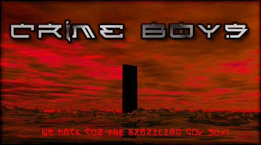

%$&#@
HAHAHA... Crime Boys was here...! @#&$%
____________________________
Durante os últimos meses, através da campanha "Brasil 500 anos" a Rede Globo e corporações filiadas tentaram passar a imagem de um Brasil alegre, feliz, sem problemas, sem marginalização. Mentira para tentar vender a ilusão de que estamos no caminho certo e não temos do que reclamar. Mentira para impor ao povo uma festa que a elite comemora: 500 anos de exploração e dominação. O povo não aceitou esse engodo, e a receptividade aos relógios, símbolos físicos da campanha, e a todo esse circo armado foi de indignação. Afinal, o que esses cara-pálidas estão comemorando? Protestos foram feitos para mostrar a indignação, a não concordância, o não alinhamento de inúmeras pessoas à esses relógios, e consequentemente, essa ilusão.
Em todas as manifestações ocorridas nas capitais brasileiras onde estavam os tais relógios, a polícia militar foi acionada pelos respectivos governos regionais. E sua ação, como não poderia deixar de ser frente a uma ação popular, foi extremamente violenta, truculenta, com chutes, porradas, cassetadas, bombas de gás, ... A PM alega estar atuando "na defesa do patrimônio público". Oras, relógio das Organizações Globo como bem público??? Isso não existe!!! A produção na Alemanha e a conservação e a manutenção no Brasil, foram sempre financiadas por esta nefasta corporação. A instalação teve o aval dos governos locais, porém jamais deixou de ser um bem particular em espaço público. Não podemos perder isso de vista. Também faz parte da desfocada justificativa policial "a defesa de vidas civis que estavam em risco". As únicas vidas que estavam em risco eram as dos manifestantes depois da chegada da PM, que saltava dos carros, postava-se à frente e disparava as balas de borracha acertando cabeças, faces, peitos e costas das pessoas.
Quebramos portanto com as falsas e mentirosas prerrogativas usadas pelo comando da PM. E chegamos ao verdadeiro motivo: sempre que há movimento popular questionando a elite, ela usará todo o aparelho repressor do Estado para ditatorialmente repreender o povo e assassinar nosso direito de questionar, de pensar, de ser. Essa é a democracia de FHC, Roberto Marinho, ACM, Marco Maciel,....
____________________________
Esse
texto foi extraído de www.comunismo.com.br
"A
televisão me deixou burro
Muito
burro demais
Agora
todas as coisas que eu penso
Me
parecem iguais..."
A TV impõe!
Veja, prove, e decida! Não aceite o que lhe for imposto!
Greetz: MaskMaster, Psyh4ck, H0sT_L0sT, VetesGirl, M3L40, GeeFunk, sector, ex-bl0w team (always), ex-inferno.br (valeu por tudo! essa luta era nossa! contnuaremos!), zillion, safemode (visit!), #linuxbr (irc.brasnet.org) e todas pessoas que estão nos apoiando... valeu ae!
Fuckz: essa TV ae que o texto se refere e essa cambada que nem vale a pena citar aqui...
The e-mail of Crime Boys is:
Crime Boys is:
Leitão/s0laris